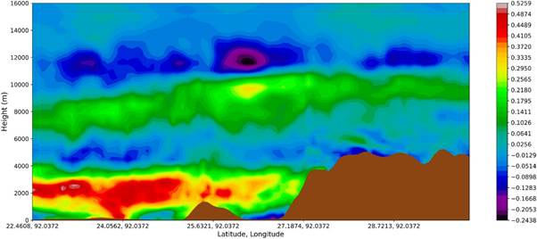
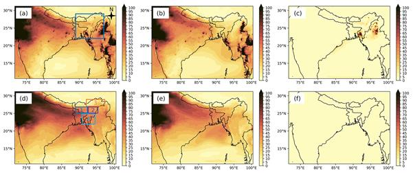
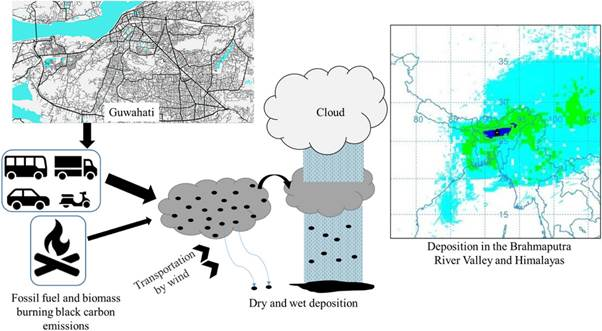

Understanding the rainfall impacts of aerosol direct radiative forcing over North-East India
This study (Barman and Gokhale, 2022) is carried out over North-East (NE) India during the pre-monsoon season, during which the region experiences the highest atmospheric heating due to high loading of absorbing aerosols. The region, also a biodiversity hotspot, has observed a decreasing rainfall trend in this season. Previous aerosol-rainfall studies over India have mostly focused on the monsoon season, but pre-monsoon rainfall also is an important rainfall component for this region. This study includes the results of a modelling study carried out with WRF-Chem model to investigate how aerosols impact the pre-monsoon rainfall and their mechanisms over this region. The influence of black carbon (BC) on radiation, clouds, rainfall and rainfall characteristics has also been investigated. The study shows that aerosols induce changes in cloud amounts which relates to rainfall changes. The semi-direct effect was found to be responsible for cloud reduction below 2 km altitude, thus affecting mainly lower-level clouds. Aerosol radiative feedbacks affected rainfall according to the height of the terrain in the region and tended to increase and decrease rainfall in general over low and high-terrain areas, respectively. Aerosol effects suppressed rainfall for more duration than it caused enhancement. The effect of increasing black carbon emissions showed a consistent increase in moisture in the region but also a consistent reduction in clouds, the changes in the spatial distribution of which was also related to the rainfall changes. BC caused suppression of lower intensity and enhancement of higher intensity rainfall. These results help to understand better the effects of aerosols on pre-monsoon rainfall distributions and the mechanisms involved.

Figure: Vertical cross-sectional profile of change in temperature (K) from aerosol direct radiative effect between 22.46° N and 30.0° N latitude and along 92.03° E longitude.
Quantifying the air pollution and climatic impacts of transboundary aerosol over North-East India
The study (Barman and Gokhale, 2023) differentiates and quantifies the impacts of aerosols emitted locally within the north-east (NE) India region and those transported from outside this region to ascertain whether local or transported aerosols are more impactful in influencing this region's rainfall during the pre-monsoon season (March–April–May). Due to the existence of a declining pre-monsoon rainfall trend in NE India, the study also quantified the role of different aerosol effects in radiative forcing (RF) and rainfall. The study has been carried out using the WRF-Chem model by comparing simulation scenarios where emissions were turned on and off within and outside the NE region. The impact of all emissions as a whole and black carbon (BC) specifically was studied. Results show that aerosols transported primarily from the Indo-Gangetic Plain (IGP) were responsible for 93.98 % of the PM10 mass over NE India's atmosphere and 64.18 % of near-surface PM10 concentration. Transported aerosols contributed >50 % of BC, organic carbon, sulfate, nitrate, ammonium and dust aerosol concentration and are hence a major contributor to air pollution. Hence, the aerosol effects were much greater with transported aerosols. An indirect aerosol effect was found to be the major effect and more impactful, with transported aerosols that dominated both rainfall and RF and suppressed rainfall more significantly than the direct and semi-direct effect. However, the increase in direct radiative effects with an increase in transported BC counteracted the rainfall suppression caused by relevant processes of other aerosol effects. Thus, this study shows atmospheric transport to be an important process for this region, as transported emissions, specifically from the IGP, were also found to have greater control over the region's rainfall. Thus, emission control policies implemented in the IGP will reduce air pollution as well as the climatic impacts of aerosols over the NE India region.

Figure: Spatial distribution of PM10 concentration (μg m−3) in baseline (a, d), No emissions in NE region (b, e) and Only emissions in NE region (c, f) scenarios. Upper row shows distribution at model level 0 (near surface) and the lower row at model level 15.
Identifying the sources of urban black carbon and modelling its regional transport
This research (Barman & Gokhale, 2019) investigates whether the vehicular black carbon emissions originated in the North-Eastern city of Guwahati are transported over and in the Brahmaputra River Valley and the Himalayas. The total black carbon was apportioned between the fossil fuel and biomass burning by real-time measurements of black carbon concentrations at two distinct locations having different traffic volumes in 2016–17. The average observed BC concentrations were 20.58, 6.42, 3.50 and 5.29 μg/m3 at the low traffic location and 22.44, 17.14, 9.2 and 16.87 μg/m3 at the high traffic location in winter, pre-monsoon, monsoon and post-monsoon seasons, respectively. Temperature, wind speed, and solar radiation were found to have significant negative correlations with BC concentrations, while relative humidity had positive correlations. It was found that vehicles contributed over 85% of the ambient black carbon at both locations. Black carbon emission from this dominant source was estimated for 2018, which showed that from vehicles it increased to 0.44–0.55 Gg in 2018 from 0.29 to 0.33 Gg in 2011, which may result in the adverse impacts on the eco-sensitive Brahmaputra River Valley and the Himalayas. The transport and deposition of black carbon under different climatic seasons was modelled using HYSPLIT. The results showed that black carbon particulates are being transported and deposited all-round the year in the Himalayas and the surrounding region. Pre-monsoon and monsoon seasons contributed to the largest amounts of deposition, and a clear relation was found between deposition and rainfall. The total BC deposited in the Brahmaputra River Valley and the Himalayas during one year was 22,142.69 kg and 1566.53 kg with average deposition rates of 0.6452 μgm−2 day−1 and 0.0182 μgm−2 day−1, respectively.

Figure: Schematic showing the generation of black carbon from fossil fuel and biomass burning in the largest city of North-East India (Guwahati) and its regional transport and deposition
Understanding the impacts of boundary layer parameterization selection on simulated seasonal meteorology
This study (Barman et al., 2024) evaluated the accuracy of six planetary boundary layer (PBL) parameterization schemes in simulating two different seasons of pre-monsoon and monsoon in India's North-East region through the Weather Research and Forecasting (WRF) model. Twelve one-month simulations were conducted with the PBL schemes, six each for April (pre-monsoon) and July (monsoon), and the model outputs were compared against observations. Three non-local schemes, Asymmetric Convective Model (ACM2), Yonsei University (YSU), Shin-Hong (HONG), and three local schemes, Quasi Normal Scale Elimination (QNSE), Mellor Yamada Janjic (MYJ) and Mellor Yamada Nakanishi Nino (MYNN3), were tested. The meteorological variables of temperature, relative humidity (RH), wind speed, wind direction, and rainfall were evaluated, and the performance of each scheme for each meteorological variable is reported. The 2 m temperature (T2) variable was well simulated by ACM2, MYJ in April, and YSU in July, while MYNN3 best simulated the 2 m RH (RH2) during both seasons. 10 m wind speed (WS10) and directions (WD10) were better simulated by MYNN3, HONG and YSU. HONG also best-simulated rainfall in April and MYJ in July. April and July being rainfall periods, an analysis of the schemes’ simulated rainfall frequency was also carried out. Moreover, the PBL schemes were also ranked, considering their combined performance with all the above meteorological parameters. While considering both the seasons and all meteorological variables, the scale-aware scheme, HONG, was the best scheme and can be used to simulate both seasons. Additionally, an in-depth analysis of surface and atmospheric parameters was also carried out to reason the simulated meteorology. QNSE expends the highest amount of its surface energy through surface evaporation, leading to the lowest surface skin temperature and T2 predictions. In contrast, MYNN3 produced the lowest mixing, which caused the moistest boundary layer, highest RH, cloud cover, and highly overestimated rainfall. Besides evaluation, which will help to choose a suitable PBL scheme for weather predictions in this region, this study also identifies the characteristics and deficiencies of PBL and surface layer schemes for improvement.